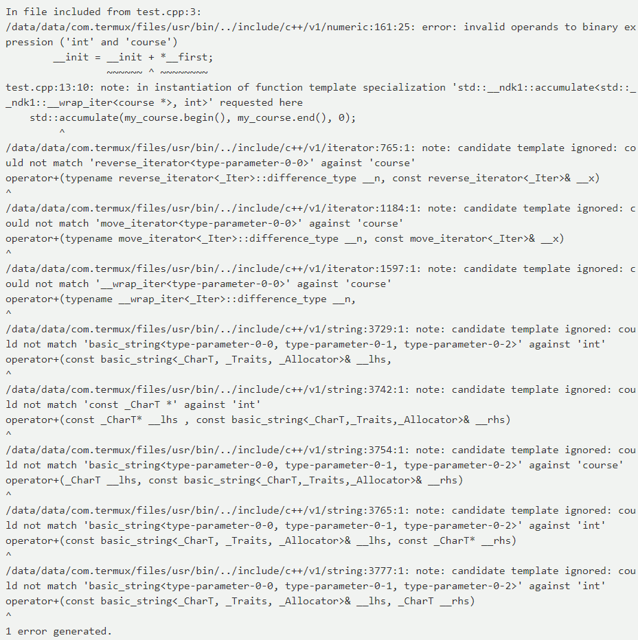

李嘉豪 毕昊阳 袁牧
January 14, 2018
泛型编程是指程序设计中对还未指定的类型编写算法，在指定类型后才 实例化的编程模式。泛型编程的好处是可以大量减少重复的代码，提高 程序员的效率。
size指定了每个元素的宽度，传入的compar函数在函数体里 将元素解释成指定的类型，从而正确完成较。
compar函数仍然无法泛型c语言没有提供显式泛型机制，由于弱类型语言的特性，程序员可以随意解释变量 从而能实现类似的效果
参数列表中的形参可以是类型形参，也可以是非类型形参
这里typename T是类型形参
enum school m是非类型形参
已指定、推导出或从默认模板实参获得所有模板实参时，函数参数列表中每次模板形参的使用都会被替换成对应的模板实参。

模板实际上相当于自动的代码生成
将模板声明中的形参替换为实参
如果在编译模板实例化一开始就检查class course和<integer>是否有operator+函数，那么就可以产出更加高效的错误日志
template <template-parameter-list>
concept concept-name = constraint-expression;任意两个限制P和Q的合取是P && Q
当且仅当P、Q都被满足时它才被满足
任意两个限制P和Q的析取是P || Q
P、Q中任意一者被满足它都被满足
断言限制是个类型为bool的表达式
当且仅当它的值是1的时候才被满足
表达式限制将会替换模板中的参数到表达式中
只有替换成功才会被满足 如：
只有++t合法时C才被满足
类型限制通过替换模板参数进行类型构造
只有替换后的类型规范时才满足 如：
隐式转换限制E只有能被隐式
转化到T时才能满足限制，如：
C中包含两个限制，分别是表达式限制和隐式转换限制
参数推导限制只有含占位符的类型T能成
功推出表达式E的类型时才被满足，如：
异常限制只有一个表达式E满足noexcept(E)时才被满足
参数化限制声明了一些列参数，叫做限制变量
它们在requires的参数列表中被声明
它的操作数被定义为一系列限制的合取
只有参数类型进行替换后仍然规范
并且操作数都满足时参数化限制才满足
使用concept和requires关键字就可以定义concepts
使用concepts时也需要使用requires语句
这里requires语句用来指定模板参数的限制
它定义了一个模板函数f，模板参数类型T必须满足Eq这个concept所定义的限制才能被实例化成功
我们尝试用模板来达到一样的功能
模板别名P和Q的合取可以直接将它们加入到void_t的参数列表中。 而类_P和_Q的合取可以表示为将std::enable_if<_P::value && _Q::value>::type 加入到void_t的参数列表中
模板别名不能表示析取。类_P和_Q的析取可以表示为将
std::enable_if<_P::value || _Q::value>::type加入到void_t的参数列表中
将std::enable_if<P>::type加入到
void_t的参数列表中来增加P的断言限制
将decltype(E)加入到void_t
的参数中来增加E的表达式限制
将T加入到void_t的参数列表中来增加T的类型限制
任一隐式转换限制{ E } -> T可以将decltype(static_cast<T>(E))
加入到void_t的参数列表中来增加类型限制
由于auto当前的推导功能有限
所以无法支持参数推导限制
任一异常限制noexcept(E)可以将std::enable_if<noexcept(E)>::type
加入到void_t的参数列表中来增加异常限制
参数T t可以用static_cast<T>(*(T*)0)来进行表示
这样的缺点是不能有名字，不过能起到等价的效果
为什么要作为语言扩展？
accumulate的声明
应该如何设计concept？
Concepts配合static_assert可以测试类型设计
concepts的设计契合了C++的设计思想: